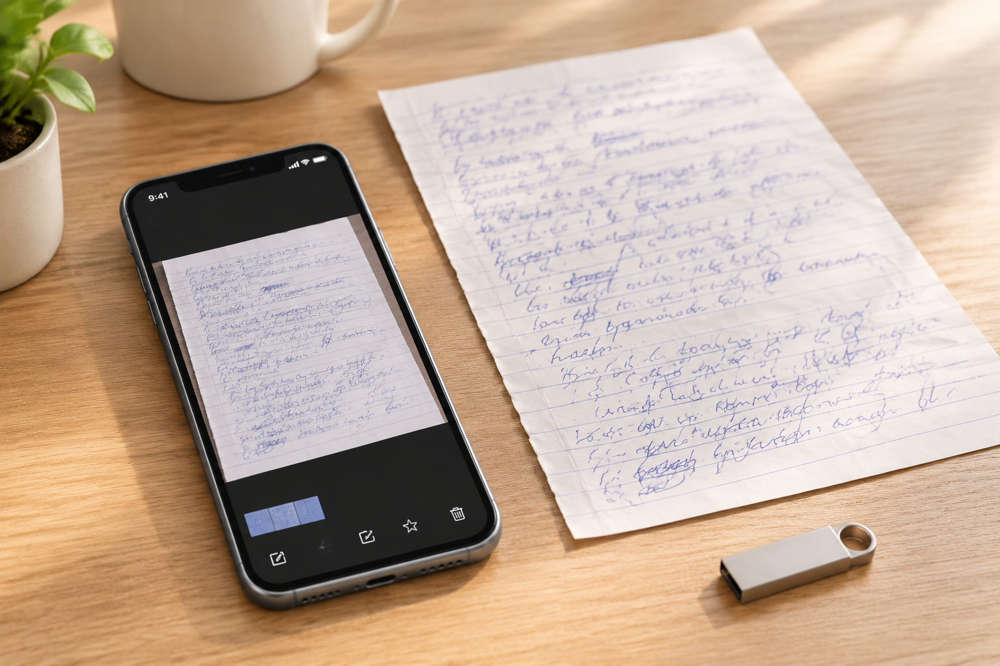

深圳传来的是截图还是原图？从手写文件的边缘开始核对
聊天里下载的图片也可能是截图。文件扩展名和像素大小不能单独说明来源，画面边缘与传送记录更值得一起核实。

像素多不代表保留原始细节
深圳线上整理模仿笔迹资料时，有些图片来自相机，有些是聊天界面截图，还有些经过放大保存。它们都可能是PNG或JPEG。图片尺寸只能说明当前文件大小，不能证明它从未被压缩。首先询问来源和传送方式，往往比比较扩展名更直接。
边缘可以提示裁切范围
纸张四边、相机拍摄背景和页面上下文，有助于确认当前图像保留了多少内容。屏幕按钮或聊天边框则提示它可能包含界面截图。但这些只是核对线索，最终仍要结合提供者说明；不能因为没有界面边框就断定一定是原图。
姓名局部寻找对应页
模仿签名、模仿签字图若只剩姓名，可请提供对应整页，标出局部位置。新收到的整页也要核对内容是否一致，不用另一张相似署名替代。保留旧截图与补充原图的对应关系，后续比较就能知道细节来自哪一个版本。
为文件保留来源说明
笔迹鉴定资料目录可写明相机原文件、转发下载或截屏，无法确认的标注待核实。不要用放大、锐化来冒充恢复原始像素。原始材料和阅读副本分别存放，既能方便浏览，也能避免对图片条件产生错误预期。